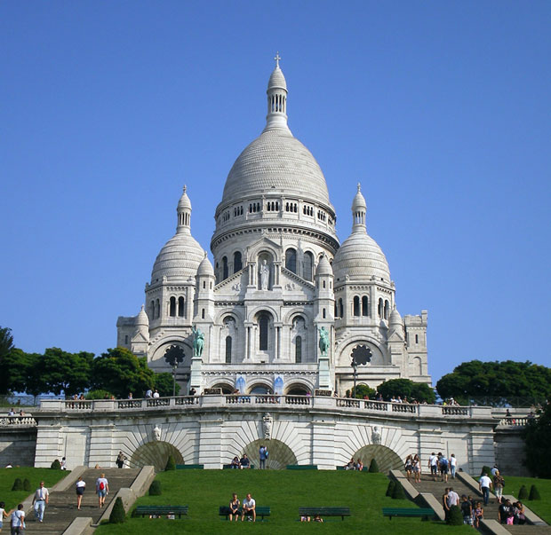

Paris houses many of history's more stunning spiritual relics-- cathedrals and chuches that stand today as breathtaking testimonials to a complex heritage of Christianity that dominated in Paris from the fall of the Roman Empire to the French Revolution. Many of these majestic cathedrals and churches fell into near-ruin in the wake of the Revolution, but revived interest in the 19th century brought about their restoration.

The Basilica of the Sacred Heart of Paris, commonly known as Sacré-Cœur Basilica (French: Basilique du Sacré-Cœur, pronounced [sakʁe kœʁ]), is a Roman Catholic church and minor basilica, dedicated to the Sacred Heart of Jesus, in Paris, France. A popular landmark, the basilica is located at the summit of the butte Montmartre, the highest point in the city. Sacré-Cœur is a double monument, political and cultural, both a national penance for the supposed excesses of the Second Empire and socialist Paris Commune of 1871 crowning its most rebellious neighborhood, and an embodiment of conservative moral order, publicly dedicated to the Sacred Heart of Jesus, which was an increasingly popular vision of a loving and sympathetic Christ.
The Sacré-Cœur Basilica was designed by Paul Abadie. Construction began in 1875 and was finished in 1914. It was consecrated after the end of World War I in 1919.
The inspiration for Sacré Cœur's design originated in the wake of the division in French society that arose in the decades following French Revolution, between devout Catholics and legitimist royalists on one side, and democrats, secularists, socialists and radicals on the other. This schism became particularly pronounced after the Franco-Prussian War and the ensuing uprising of the Paris Commune of 1870-71. Though today the Basilica is asserted to be dedicated in honor of the 58,000 who lost their lives during the war, the decree of the Assemblée nationale, 24 January 2010, responding to a request by the archbishop of Paris by voting its construction, specifies that it is to "expiate the crimes of the Commune". Montmartre had been the site of the Commune's first insurrection, and many dedicated communards were forever entombed in the subterranean galleries of former gypsum mines where they had retreated, by explosives detonated at the entrances by the Army of Versailles. Hostages had been executed on both sides, and the Communards had executed Georges Darboy, Archbishop of Paris, who became a martyr for the resurgent Catholic Church. His successor Guibert, climbing the Butte Montmartre in October 1872, was reported to have had a vision, as clouds dispersed over the panorama: "It is here, it is here where the martyrs are, it is here that the Sacred Heart must reign so that it can beckon all to come".
In the moment of inertia following the resignation of the government of Adolphe Thiers, 24 May 1873, François Pie, bishop of Poitiers, expressed the national yearning for spiritual renewal— "the hour of the Church has come"— that would be expressed through the "Government of Moral Order" of the Third Republic, which linked Catholic institutions with secular ones, in "a project of religious and national renewal, the main features of which were the restoration of monarchy and the defense of Rome within a cultural framework of official piety", of which Sacré-Cœur is the chief lasting triumphalist monument.
The decree voting its construction as a "matter of public utility", 24 July, followed close on Thiers' resignation. The project was expressed by the Church as a National Vow (Voeu national) and financial support came from parishes throughout France. The dedicatory inscription records the Basilica as the accomplishment of a vow by Alexandre Legentil and Hubert Rohault de Fleury, ratified by Joseph-Hippolyte Guibert, Archbishop of Paris. The project took many years to complete.